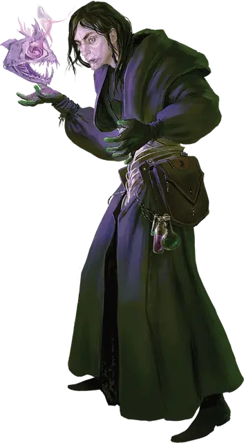

Лоужет
Lohezet
Средний Гуманоид (Человек, Волшебник), нейтрально-злой, именной НИП

Класс Доспеха 12
Хиты 137 (25к8 + 25)
Скорость 30 футов
| мод | спас | ||
|---|---|---|---|
| СИЛ | 9 | −1 | −1 |
| ЛОВ | 14 | +2 | +2 |
| ТЕЛ | 12 | +1 | +5 |
| мод | спас | ||
|---|---|---|---|
| ИНТ | 20 | +5 | +5 |
| МДР | 14 | +2 | +6 |
| ХАР | 11 | +0 | +0 |
Навыки История +9, Магия +9, Медицина +6
Иммунитет к урону яд
Иммунитет к состояниям отравление
Чувства пассивное Восприятие 12
Языки Общий, Дварфийский, Инфернальный, Эльфийский
Опасность 12 (8400 опыта)
Бонус мастерства +4
Особенности
Мастерство в токсинах. Лоужет игнорирует сопротивление существа ядам.
Действия
Мультиатака. Лоужет совершает три атаки Иссушающим взрывом или использует Ядовитые испарения, если доступно. Он может заменить одну из своих атак на Использование заклинаний.
Иссушающий взрыв. . Рукопашная или дальнобойная атака заклинанием: +9 к попаданию, досягаемость 5 фт. или дистанция 60 фт, одна цель. Попадание: 18 (2к12 + 5) урона некротической энергией.
Ядовитые испарения (перезарядка 4-6). Лоужет магическим образом призывает клубящееся облако фиолетового тумана в сфере радиусом 20 футов с центром в точке в 120 футах от себя. Область внутри сферы сильно заслонена, и когда существо начинает свой ход в сфере или входит в сферу в первый раз за ход, оно должно совершить спасбросок Телосложения Сл 17. При провале существо получает 39 (6к12) урона ядом и становится отравленным до начала своего следующего хода. При успехе существо получает половину этого урона и не становится отравленным. Облако существует в течение 1 минуты, пока Лоужет не окончит этот эффект раньше (не требует действия) или не использует это действие снова. Сильный ветер развеивает облако.
Использование заклинаний. Лоужет накладывает одно из следующих заклинаний, не нуждаясь в материальных компонентах. Его базовой характеристикой является Интеллект (Сл спасброска 17):
• Неограниченно: обнаружение магии [detect magic], свет [light], фокусы [prestidigitation];
• 2/день каждое: доспехи мага [mage armor], переносящая дверь [dimension door];
• 1/день каждое: магический глаз [arcane eye], подчинение личности [dominate person], силовая стена [wall of force].
Реакции
Ядовитое возмездие (3/день). Когда существо в пределах 60 футов от Лоужета причиняет ему урон, Лоужет отвечает магически созданной струей вонючего фиолетового тумана. Существо должно совершить спасбросок Телосложения Сл 17, получая 16 (2к10 + 5) урона ядом при провале, или половину этого урона при успехе.
Описание
Член ордена Черных одежд Магов Высшего волшебства Лоужет— ученый, одержимый вымершими существами и исчезнувшими империями. Он воспринимает Драконью армию как способ воссоздать славу прошлого Ансалона. Во время вторжения Драконьей армии в Кхур и Кендермор Лоужет, исследуя истарские развалины, обнаружил местонахождение летающего города Онияри. Теперь он путешествует с армией Красного Дракона, намереваясь найти Город утраченных имён и вновь поднять его в воздух.
В бою Лоужет применяет методы вымерших ядовитых хищников. Его магические токсины изматывают даже самых сильных врагов, предоставляя ему возможность сбежать или превратить неприятелей в побледневшие трупы.